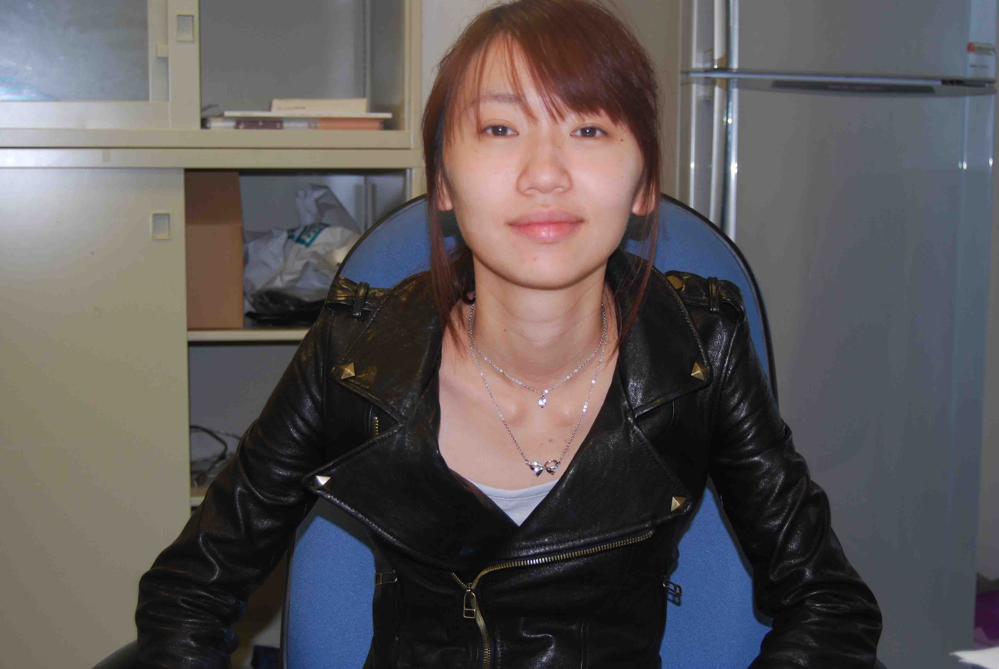

張筱琳 Zhang, Shaw-Lin
Higher Education
Bachelor ,
Electrical Engineering and Computer Science Undergraduate Honors Program
,
National Chiao Tung University
,
Independent Study:
Quasi蒙地卡羅法
Adviser: Prof.
Tian-Shyr, Dai
Talks and Presentations
Pricing Options with Quasi-Monte Carlo Simulation